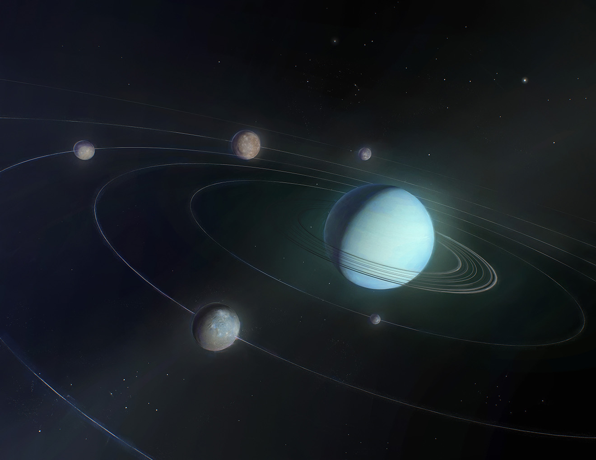
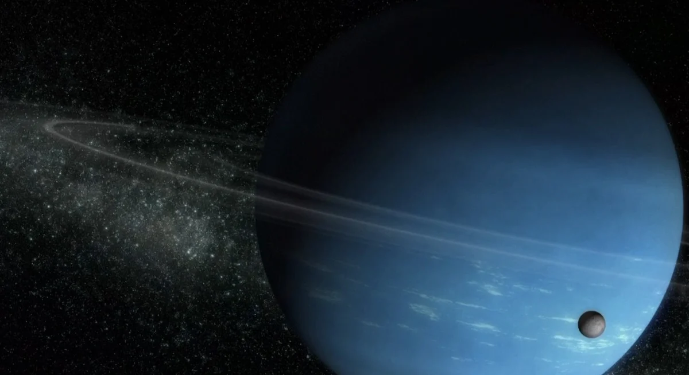
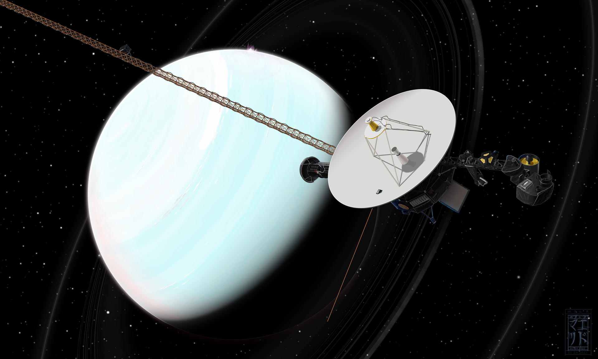

Уран
Уран - планета Сонячної системи, сьома за віддаленістю від Сонця, третя за діаметром і четверта по масі. Була відкрита в 1781 англійським астрономом Вільямом Гершелем і названа на честь грецького бога неба Урана.

Уран став першою планетою, виявленою в Новий час та за допомогою телескопа. Його відкрив Вільям Гершель 13 березня 1781 року, тим самим уперше з часів античності розширивши межі Сонячної системи в очах людини. Незважаючи на те, що часом Уран помітний неозброєним оком, більш ранні спостерігачі приймали його за тьмяну зірку.
На відміну від газових гігантів - Сатурна і Юпітера, що складаються в основному з водню і гелію, в надрах Урана і схожого з ним Нептуна відсутній металевий водень, але багато льоду в його високотемпературних модифікаціях. З цієї причини фахівці виділили ці дві планети в окрему категорію «крижаних гігантів». Основу атмосфери Урану становлять водень та гелій. Крім того, у ній виявлено сліди метану та інших вуглеводнів, а також хмари з льоду, твердого аміаку та водню. Це найхолодніша планетарна атмосфера Сонячної системи з мінімальною температурою 49 К (−224 °C). Вважають, що Уран має складну шарувату будову хмар, де вода становить нижній шар, а метан - верхній. Надра Урану складаються переважно з льодів і гірських порід. Так само як у газових гігантів Сонячної системи, Уран має систему кілець і магнітосферу, а крім того, 27 супутників.
Астрономічні харакетристики
Середня віддаленість планети від Сонця становить 19,1914 а. (2,8 млрд. км). Період повного обігу Урана навколо Сонця становить 84 земні роки. Відстань між Ураном та Землею змінюється від 2,6 до 3,15 млрд км. Період обертання Урана навколо осі становить 17 годин 14 хвилин. Однак, як і на інших планетах-гігантах, у верхніх шарах атмосфери Урану дмуть дуже сильні вітри у напрямку обертання, що досягають швидкості 240 м/с. Таким чином, поблизу 60 ° південної широти деякі видимі атмосферні деталі роблять оберт навколо планети всього за 14 годин.
Середня віддаленість планети від Сонця становить 19,1914 а. (2,8 млрд. км). Період повного обігу Урана навколо Сонця становить 84 земні роки. Відстань між Ураном та Землею змінюється від 2,6 до 3,15 млрд км. Період обертання Урана навколо осі становить 17 годин 14 хвилин. Однак, як і на інших планетах-гігантах, у верхніх шарах атмосфери Урану дмуть дуже сильні вітри у напрямку обертання, що досягають швидкості 240 м/с. Таким чином, поблизу 60 ° південної широти деякі видимі атмосферні деталі роблять оберт навколо планети всього за 14 годин.

Площина екватора Урана нахилена до площини його орбіти під кутом 97,86 ° - тобто планета обертається ретроградно, "лежачи на боці злегка вниз головою". Це призводить до того, що зміна пори року відбувається зовсім не так, як на інших планетах Сонячної системи. Якщо інші планети можна порівняти з вовчками, що обертаються, то Уран більше схожий на кулю, що котиться. Таке аномальне обертання зазвичай пояснюють зіткненням Урана з великою планетезімаллю на ранньому етапі його формування. У моменти сонцестоянь один із полюсів планети виявляється спрямованим на Сонце. Тільки вузька смужка біля екватора відчуває швидку зміну дня та ночі; при цьому Сонце там розташоване дуже низько над горизонтом, як у земних полярних широтах. Через півроку (ураніанського) ситуація змінюється на протилежну: «полярний день» настає в іншій півкулі. Кожен полюс 42 земних роки знаходиться у темряві — і ще 42 роки під світлом Сонця. У моменти рівнодення Сонце стоїть перед екватором Урана, що дає таку ж зміну дня і ночі, як на інших планетах. Чергове рівнодення на Урані настало 7 грудня 2007 року.
Кільця Урану
Уран має слабко виражену систему кілець, що складається з дуже темних частинок діаметром від мікрометрів до часток метра. Це друга кільцева система, виявлена в Сонячній системі (першою була система кілець Сатурна). На даний момент Уран знає 13 кілець, найяскравішим з яких є кільце ε (епсілон). Кільця Урана, мабуть, дуже молоді — це вказують проміжки з-поміж них, і навіть відмінності у тому прозорості. Це говорить про те, що кільця сформувалися не разом із планетою. Можливо, раніше кільця були одним із супутників Урану, який зруйнувався або під час зіткнення з якимось небесним тілом, або під дією приливних сил.
Теорія виникнення
Є багато аргументів на користь того, що відмінності між крижаними та газовими гігантами зародилися ще при формуванні Сонячної системи. Як вважають, Сонячна система сформувалася з гігантської кулі, що обертається, що складається з газу і пилу і відомого як Протосонячна туманність. Потім куля ущільнилася, і сформувався диск із Сонцем у центрі. Велика частина водню з гелієм пішла формування Сонця. А частинки пилу почали збиратися разом, щоби згодом сформувати протопланети. У міру зростання планет деякі з них мали досить сильне гравітаційне поле, щоб сконцентрувати навколо себе залишковий газ. Вони продовжували набирати газ доти, доки не досягали межі, і росли по експоненті. Крижаним гігантам вдалося набрати значно менше газу — лише кілька мас Землі. Таким чином, їхня маса не досягала цієї межі. Сучасні теорії формування Сонячної системи мають деякі труднощі у поясненнях формування Урану та Нептуна. Ці планети дуже великі для відстані, на якій вони знаходяться від Сонця. Можливо, раніше вони були ближчими до Сонця, але потім якимось чином змінили орбіти. Втім, нові методи планетарного моделювання показують, що Уран і Нептун справді могли сформуватися на своєму нинішньому місці, і, таким чином, їх реальні розміри згідно з цими моделями не є перешкодою в теорії походження Сонячної системи.

Дослідження Урану
Відкриття Урана та його супутників почалося наприкінці XVIII століття, коли Вільям Гершель у 1781 році виявив саму планету, а потім її два найбільші супутники, Титанію та Оберона. Подальші дослідження в XIX і XX століттях призвели до відкриття додаткових супутників та системи кілець Урану.
Ключовими моментами в історії досліджень Урану стали відкриття нових супутників та кілець планети. Важливою подією було проходження космічного апарату Вояджер-2 поблизу Урана в 1986 році. Ця місія дозволила отримати цінні дані про атмосферу, магнітне поле, супутники і кільця Урану. Інтерес до Урану зберігається й у часи. Планується, що до 2030 року китайська місія "Тяньвень-4" також досліджує цю загадкову планету, надаючи нові дані для нашого розуміння цього віддаленого світу в нашій сонячній системі.